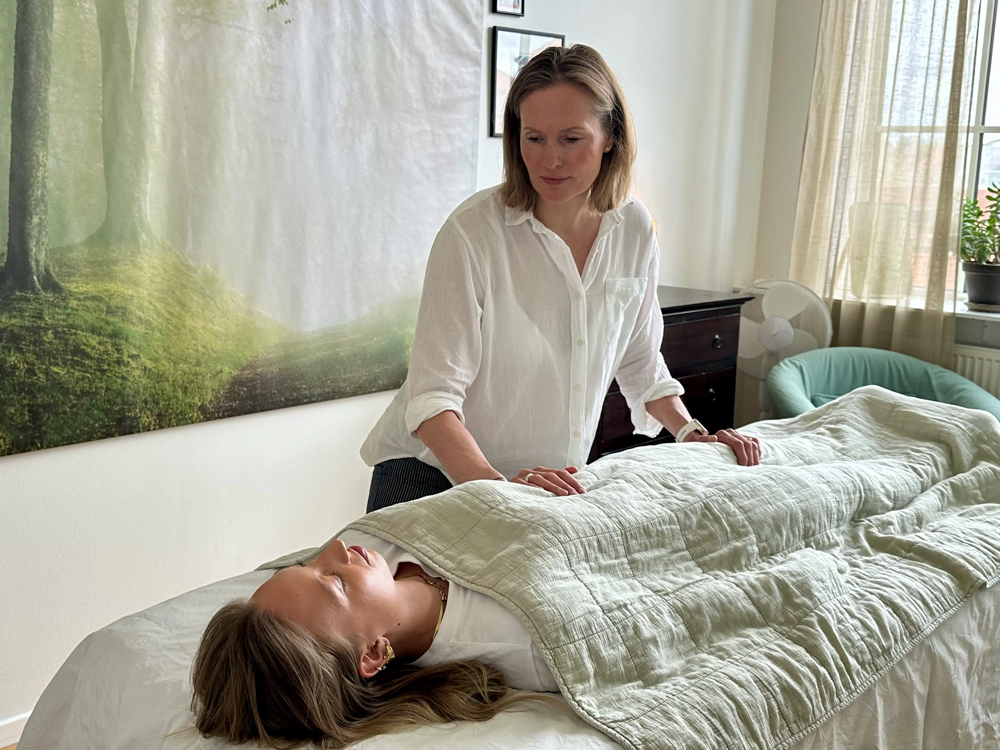
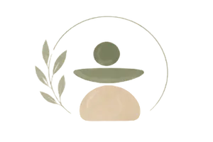
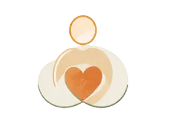
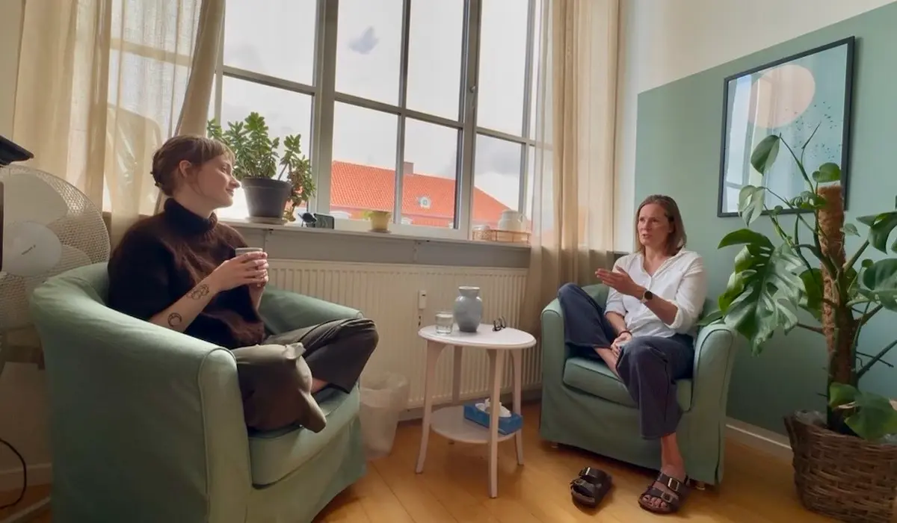

Kropsterapi med fokus på dig som helhed
En behandling giver dig en fornemmelse af hvad og hvordan vi sammen skal arbejde, men
det
er i et forløb at
vi
sammen
kan gøre en vigtig forskel!
Derfor anbefaler jeg et forløb, fremfor en enkel behandling, da vi sjældent når nogle steder af blot en
behandling.
Den første behandling er dog vigtig, både for at give dig en fornemmelse af hvordan jeg arbejder -og til
at
se
om der er
kemi og tillid, hvilket selvfølgelig er en vigtig forudsætning for at arbejde videre i forløb.
Balance * Ro * Trivsel



Hvad er en Manuvision-behandling?
En Manuvision-behandling hos mig starter altid med en kort samtale. Hvad bringer dig til min briks, hvad sker der i netop din krop? Hvilke udfordringer står du med i øjeblikket? Fysisk eller mentalt? Eller begge dele? Jeg hjælper dig via kropsterapien, guider dig i dit åndedræt og hjælper dig til at gå ind i de spændinger og blokeringer du møder undervejs i behandlingen. Jeg behandler for at komme ind til kernen af den / de udfordring (er) du står med. Hvad enten de er af fysisk eller mental karakter. Eller begge dele. Fordi det er lige præcis DER vi sammen kan lave meningsfulde ændringer til dig.
Hvilke reaktioner kan der komme?
Jeg er stærk i min intuition og indføling og bruger mine kropsterapeutiske værktøjer, til at hjælpe dig til at give slip på spændinger og blokeringer. Nogle gange vil det give følelsesmæssige reaktioner, andre gange vil du opleve en mere kropslig forløsning.
Første behandling:
Står du et sted i livet, hvor du er ekstra udfordret -eller for længe har overhørt vigtig signaler, kan første behandling føles som 'et skridt tilbage'. Dette kan selvfølgelig være ret frustrerende. Her skal du vide, at dette er et nødvendigt skridt på vejen til at give slip på netop dét som tynger dig. Uanset hvad du mærker efter behandling, så er du altid velkommen til at kontakte mig, hvis du har behov for at snakke det igennem
Hvad kan jeg forvente efter en behandling hos Mette?
Det er meget forskelligt, hvordan vi reagerer på en Manuvision-behandling. Nogle
mærker
meget, andre mindre. Derfor har
jeg samlet lidt information her, som du kan læse i ro og mag efter behandlingen.
Du er selvfølgelig altid velkommen til
at kontakte mig, hvis du har spørgsmål.
En behandling arbejder med de spændinger og smerter, kroppen har opbygget over tid. Ofte hænger fysiske
spændinger også
sammen med følelsesmæssigt pres – fx stress, konflikter eller længere perioder med belastning. Kroppen
spænder ubevidst
op, og hvis det står på længe nok, kan spændingerne sætte sig fast.
En kort beskrivelse af de fysiske og følelsesmæssige eftervirkninger:
Når kroppen slipper spændingerne, kan det derfor påvirke både fysisk og
følelsesmæssigt.
Du kan fx opleve træthed,
lethed, kulde, rystelser, gråd, uro eller en følelse af forløsning.
Reaktionerne kan komme under behandlingen eller i timerne og dagene efter.
Det er helt normalt og kroppens måde at give slip på.
For nogle kan det føles overvældende, men jo mere vi giver kroppen lov til at reagere naturligt, desto
mere
frihed og ro
kan vi opleve – både fysisk og mentalt.
En Manuvision-behandling hos mig
starter altid med en kort samtale:
Hvad bringer dig
til
min briks?
Hvad
sker
der i
netop din krop?
Hvilke udfordringer står du med i øjeblikket?
Fysisk eller
mentalt?
Måske begge dele?
Jeg hjælper dig via kropsterapien, guider dig i dit åndedræt og hjælper dig
til at gå ind i de
spændinger
og
blokeringer
du møder undervejs i behandlingen.
Jeg behandler for at komme ind til kernen af den / de udfordring (er) du står med.
Hvad enten de er
af fysisk eller mental karakter. Eller måske begge dele?
Kernen af dine ufordringer er lige præcis DER vi sammen kan lave meningsfulde
ændringer sammen
til
dig.

En konsultation er første skridt i din proces hos mig. Her taler vi om dine fysiske og mentale udfordringer, din hverdag og din krops historie. Jeg lytter til dine behov og hjælper med at identificere, hvor spændinger, stress eller ubalancer kan komme fra. Sammen skaber vi et klart overblik og en retning for, hvordan du kan opnå mere ro, balance og frihed i kroppen.
Samarbejde i kropsterapi handler om, at vi arbejder tæt sammen gennem hele forløbet. Du bidrager med din krops oplevelser, og jeg hjælper med at aflæse og forstå de signaler, kroppen viser. Gennem behandling og dialog skaber vi en proces, hvor spændinger gradvist slipper, og du får bedre kontakt til din krop, mere ro i nervesystemet og større overskud i hverdagen.
Udvikling handler om den forandring, der opstår, når kroppen begynder at give slip på gamle spændinger og mønstre. Gennem kropsterapi kan du opleve øget kropsbevidsthed, bedre følelsesmæssig balance og en stærkere forbindelse til dig selv. Det er en proces, hvor du gradvist får mere energi, klarhed og indre ro.
Forbedring handler om konkrete ændringer i din krop og dit velvære i hverdagen. Det kan være mindre muskelspænding, færre smerter, bedre vejrtrækning og et roligere nervesystem. Målet er, at du mærker en tydelig og varig forskel, så du kan bevæge dig mere frit, leve med større overskud og føle dig bedre tilpas i din krop.
Mine klienter udtaler ofte at de i et forløb og efter et par behandlinger, føler sig lette og med en stærkere og dybere fornemmelse af sig selv. En fornemmelse af at finde tilbage til sig selv. Nogle bliver også fysisk ømme, som efter en hård træning, eller træning af en ny muskelgruppe. Efter dag 1 eller 2 fortager ømheden sig og du vil føle dig mere fri.

Et forløb hos mig vil give dig
Balance i hverdagen
Bedre balance skaber stabilitet mellem arbejde, fritid og relationer livet
*
Ro i kroppen
Øget ro giver overskud og reducerer stress i hverdagen markant
*
Bedre trivsel i hverdagen
Større trivsel styrker mental sundhed og daglig energi generelt velvære
*
Mere nærvær & energi
Mere nærvær hjælper dig til at være til stede fuldt